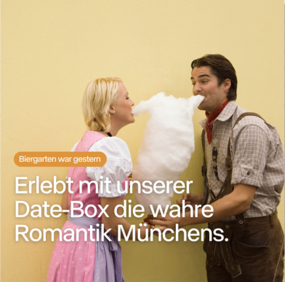
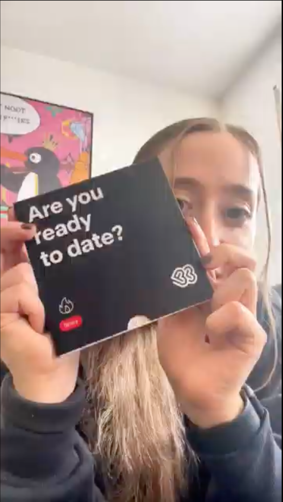
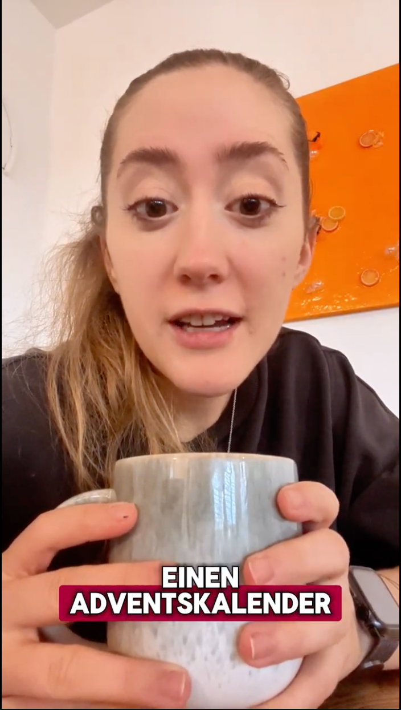
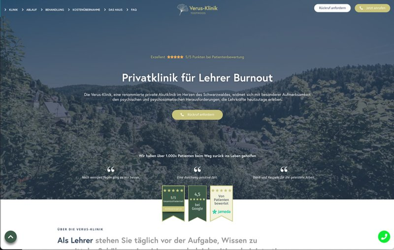
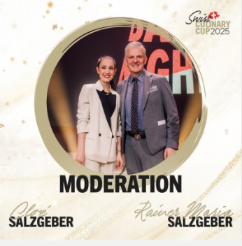
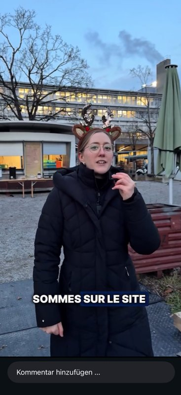

6+ yrs
Web, performance & content marketing
Six years in web, performance and content marketing. I build and optimise WordPress sites, run Google and Meta campaigns, and design the content that feeds them – with a Media Design background and UX/UI training behind it.
Setup, structure and continuous optimisation of Google Ads Search over three months – keyword clusters, negative keywords, search term cleaning and ad testing.
Read the case study →



Hook, benefit and proof variations, A/B tests and scaling of winning creatives.


Concept, copy, editing, setup and optimisation. Content that felt like organic UGC performed best and was selected for the Creative Center.

Concept, structure, copy and implementation in WordPress and Elementor, with a clear user flow and mobile-first readability.



Editorial calendar, mixed formats, hook structure and reusable templates for a consistent presence.


UGC-style content, on-camera Reels in 9:16, subtitles and clear CTAs – for organic and paid use.


Two concept projects from my UX/UI training: information hierarchy, user flow and responsive adaptation from desktop to mobile.
My strength is the link between web and performance: I build the page, think through the user journey, and then make sure the right people arrive there through Google Ads, Meta or SEO – and that I can measure what happened.
I build and run my own road cycling channel on Instagram and TikTok – my own niche, my own formats, and a testing ground for short-form ideas without a brief. How I went about it →
Near Zurich. Working in Switzerland since December 2024, open to roles in the Zurich area.
Open to Digital, Web and Performance Marketing roles in the Zurich area. Happy to walk you through any of the projects above.
Full CV on request – just drop me a line.